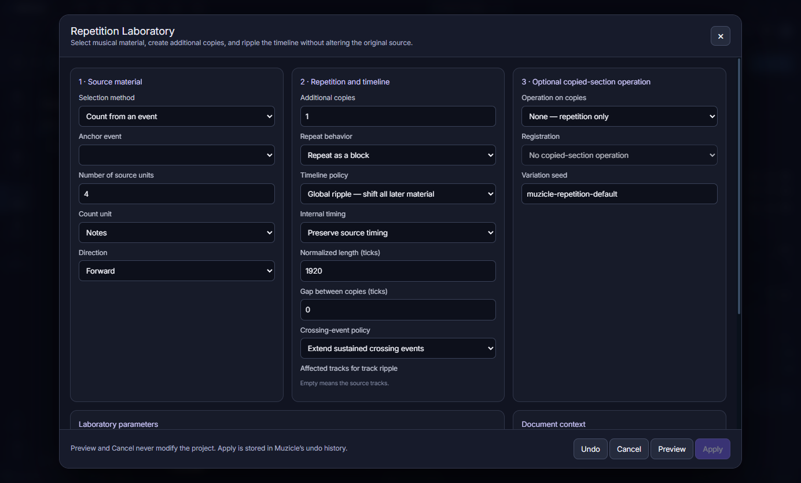
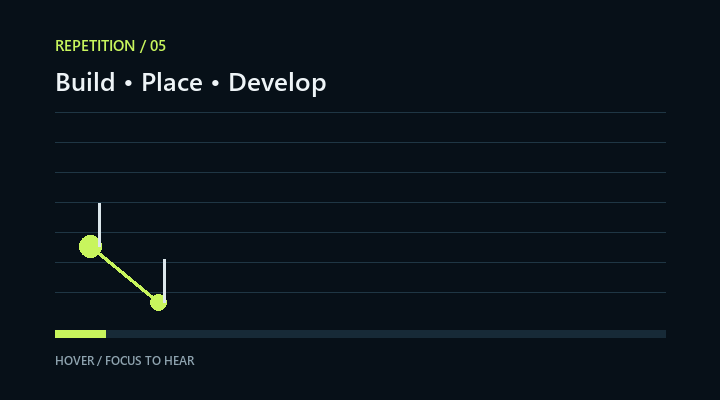

Repeat a measure, phrase, or exact musical range.

Choose block-level or note-level generation.
Ripple later events or overlay the destination.
Handle notes that meet or cross the selected edge.
Send generated copies onward while the source remains available.

Four audible views of the workflow.
Move across each card—or focus it with the keyboard—to hear how exact range, ripple placement, overlay placement, and further development can change the musical result.
Repetition organizes how musical material multiplies and develops.
Use it before, after, or between the three Laboratories. Each generated copy can remain recognizable, become a variation, or begin a completely new chain of musical decisions.